This CVPR paper is the Open Access version, provided by the Computer Vision Foundation.
Except for this watermark, it is identical to the accepted version; the final published version of the proceedings is available on IEEE Xplore.
Wenhan Lv 1 , Shaopan Wang 3 , Xiangyu Wu 2 , Tianchu Hang 4 , Zhongquan Jian 5*, Qingqiang Wu 1,2,6,7* 1 School of Film, Xiamen University 2 School of Informatics, Xiamen University 3 The First Affiliated Hospital of Xiamen University, School of Medicine, Xiamen University 4 Division of MHDDSUS, NC DHHS 5 School of Computer and Data Science, Minjiang University 6 Key Laboratory of Digital Protection and Intelligent Processing of Intangible Cultural Heritage of Fujian and Taiwan, Ministry of Culture and Tourism, Xiamen University 7 Institute of Artificial Intelligence, Xiamen University
Abstract
Text-to-motion generation aims to synthesize realistic and semantically aligned 3D human motions from natural language descriptions. Existing diffusion-based methods often rely on isotropic latent priors and shallow cross-modal supervision, which lead to semantic entanglement, limited controllability, and poor interpretability. We propose HESP, a unified diffusion framework that hierarchically enhances semantic priors for disentangled text-driven motion generation. At its core, HESP introduces an Adaptive Gaussian Variational Autoencoder (AG-VAE) that structures the latent motion manifold into multiple semantically coherent submanifolds, enabling interpretable and controllable motion representations. To further bridge linguistic and kinematic semantics, we design a Dynamic Cross-Modal Memory (DCMM) module for adaptive semantic fusion and a Hierarchical Cross-Modal Attention (HCA) mechanism to capture multi-level text-motion correspondences. Extensive experiments on HumanML3D and KIT-ML demonstrate that HESP consistently outperforms state-of-the-art baselines such as SALAD, MoMask, and MDM, achieving improvement while maintaining higher diversity and physical plausibility. Moreover, the structured latent space of HESP provides interpretable clusters that reveal clear semantic boundaries among different motion categories.
1. Introduction
Across animation, virtual-human interaction, film special effects, and intelligent robotics, 3D human motion generation offers vast application potential. With the emergence of large multimodal models [7, 29, 30] and cross-modal diffusion frameworks, text-conditioned motion generation has made notable progress in producing visually plausible sequences. However, achieving fine-grained semantic consistency and controllable motion synthesis remains a major challenge [1, 2, 5, 6, 11, 12, 15, 36, 37, 43, 44]. Recent diffusion-based [32] approaches [11, 37, 43, 44] such as MDM [38], MoMask [13], and SALAD [16] primarily rely on isotropic Gaussian priors and frame-level cross-modal supervision. These assumptions often lead to semantic entanglement in the latent space [42, 49], where motions with distinct meanings occupy overlapping distributions, thereby degrading controllability and interpretability. Moreover, existing models treat text-motion [12, 17, 48, 50, 51] alignment as a flat, single-stage process, neglecting the hierarchical correspondence between linguistic semantics (word → sentence) and motion structure (joint → sequence). As a result, generated actions frequently misrepresent complex textual instructions and lack global temporal coherence.
*Corresponding Authors.
To address these issues, we argue that the latent space of human motion should reflect hierarchical semantic organization, rather than a single unimodal prior. Building on this insight, we introduce the Hierarchical Enhancement of Semantic Priors (HESP) framework, a unified text-to-motion generation model that jointly structures the latent space and models multi-level semantic alignment. HESP redefines the latent motion manifold as a composition of semantically coherent submanifolds and integrates adaptive memory and hierarchical attention to dynamically bridge linguistic and kinematic information.
Specifically, HESP introduces three key components: (1) an Adaptive Gaussian Variational Autoencoder (AG-VAE) that decomposes the latent space into semantically meaningful submanifolds for interpretable representation learning; (2) a Dynamic Cross-Modal Memory (DCMM) module that adaptively fuses motion and text features through long-term semantic retrieval; and (3) a Hierarchical CrossModal Attention (HCA) mechanism that aligns textual and motion hierarchies at both local and global scales. These components are unified within a diffusion-based generation framework, enabling fine-grained controllability, semantic disentanglement, and high-fidelity motion synthesis.
Our main contributions are summarized as follows:
· Hierarchical latent modeling: We propose AG-VAE, which structures the latent motion space into semantically coherent submanifolds, mitigating semantic entanglement and enhancing interpretability.
· Adaptive cross-modal reasoning: We design DCMM and HCA to dynamically align linguistic and motion hierarchies, improving semantic fidelity and controllability.
· State-of-the-art performance: Extensive experiments on HumanML3D [37] and KIT-ML [28] demonstrate that HESP consistently outperforms prior methods [13, 16, 38] in FID, R-Precision, and diversity metrics.
· Unlike prior Gaussian-mixture latent models (GMVAE, SALAD), our AG-VAE introduces a temporally adaptive mixture prior explicitly conditioned on skeletal topology, enabling motion-phase-aware latent modulation.
2. Related Work
2.1. Text-to-Motion Generation
The generation of human motion by text [11, 41] is synthesize human motion sequences that align semantically and physically with natural language descriptions. Early studies [9, 14, 20, 21, 33-35, 47] about human motion synthesis typically relied on two-stage approach or sequenceto-sequence architectures. In the text-to-motion generation, Some works [1-3, 5, 10, 22, 26] directly mapped text embeddings to pose trajectories, but these methods struggled to capture complex semantics and long-term temporal dependencies. With the advent of cross-modal pretraining, models such as CLIP [30] motion encoders and LLMs have significantly advanced this field. Works like [3, 26, 36] exploit pretrained multimodal representations to provide semantic constraints for motion generation. Despite their progress, these models usually enforce supervision at the frame or clip level, leading to limited understanding of global motion semantics. Consequently, generated motions often lack coherent temporal structure and fine-grained semantic alignment with textual descriptions.
2.2. Latent Motion Representation Learning
Latent space modeling plays a crucial role in controlling motion diversity and semantics. Traditional approaches [6, 11, 43] employ single-mode isotropic Gaussian distributions to represent motion manifolds. This assumption implicitly enforces smooth semantic transitions in the latent space but inevitably causes semantic entanglement and mode collapse, since human motion consists of multiple discrete yet interdependent dynamic patterns. Several methods have attempted to address this limitation through Gaussian mixture models [31], variational autoencoder [19], or vector-quantized representations [39], which partially improve motion disentanglement. However, they still fail to explicitly organize semantic hierarchies across motion submanifolds. To improve the decoupling effect of different action categories in the latent space, the CGMVAE [23] model introduces Fisher's discriminant as a regularization term to enhance the realism and diversity of the generated actions.
In this paper, our AG-VAE in Figure 1-(b) redefines the latent motion space as a composition of semantically organized sub-manifolds, each representing distinct motion dynamics, thereby achieving a more structured and interpretable motion representation. This structural enhancement is vividly demonstrated in Figure 1, where we compare the latent space organization of our AG-VAE against the conventional Standard VAE. As shown in Figure 1-(a), the VAE produces a largely unstructured and overlapping distribution in the latent space, making it difficult to discern distinct motion patterns. In stark contrast, our AGVAE exhibits a clearly separated distribution, where each mode corresponds to semantically meaningful motion dynamics. The effectiveness of our approach is further validated by the cluster probability distribution in Figure 1-(c), which shows well-defined cluster assignments with high confidence scores. This demonstrates that AG-VAE successfully partitions the latent space into interpretable submanifolds, each capturing specific motion characteristics.
2.3. Cross-Modal and Attention Mechanisms
Cross-modal [4] alignment between text and motion is complex, involving both local (word-submotion) and global (sentence-sequence) correspondences. Prior works often rely on explicit contrastive objectives or pretrained embeddings to bridge modalities, but such approaches lack dynamic alignment and hierarchical interpretability. Diffusion models as their backbone [6, 18, 25, 38, 40, 45, 46], have improved temporal reasoning through self- and crossattention mechanisms. Nevertheless, they typically overlook skeletal topology and hierarchical motion dependencies, leading to semantic misalignment or physically inconsistent motion generation. So we propose the DCMM module, which adaptively reallocates attention across semantic and motion hierarchies, and the HCA mechanism that captures multi-level text-motion correlations.
3. Method
We propose HESP, a unified text-to-motion generation framework that integrates structured latent modeling and hierarchical cross-modal reasoning within a diffusion architecture. As shown in Figure 2, given a textual prompt c, our goal is to generate a motion sequence m1:N = x1, x2, . . . , xN, where xn denotes the skeletal pose vector at the (n)-th frame, our framework consists of three key modules: AG-VAE learns a semantically structured latent space; DCMM retrieves long-term contextual dependencies between text and motion features; HCA performs fine-tocoarse alignment between linguistic and kinematic hierarchies. These components are jointly optimized within a diffusion-based decoder, enabling high-fidelity and interpretable motion synthesis conditioned on text. In the following sections, we detail each component of our framework, including the Adaptive Gaussian Variational Autoencoder (Sec. 3.1), our diffusion modeling (Sec. 3.2), Additional implementation details are provided in the supplementary material.

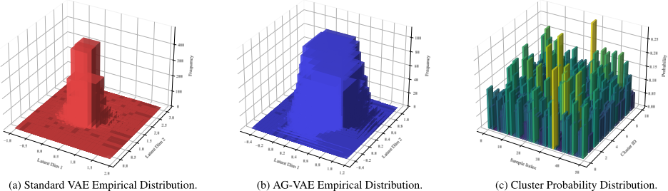

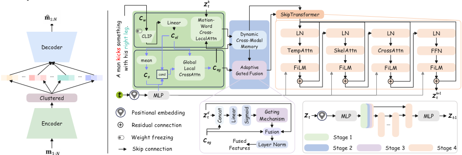
3.1. AG-VAE
Motivation. Conventional VAEs and recent skeletonaware diffusion models (e.g., SALAD [16]) typically assume an isotropic Gaussian prior, which treats all motion dynamics as smoothly connected in a single manifold.
This assumption leads to semantic entanglement: motions with distinct intents (e.g., walking vs. waving) collapse into overlapping latent regions. Existing Gaussian mixture VAEs (GMVAE [8]) alleviate this problem to some extent, but they are still static and ignore the inherent temporal evolution of skeletal topology and human motion.
Our contribution. We introduce Adaptive Gaussian VAE (AG-VAE), a hierarchical latent modeling approach that conditions the Gaussian mixture prior on both skeletal topology and temporal semantics, and dynamically adapts mixture weights over time. Unlike GMVAE, AG-VAE performs structure-aware, time-adaptive decomposition of the motion manifold.
Firstly, We give a motion sequence m1:N ∈ RN×J×3 , AG-VAE encodes it via skeleton-temporal convolutions: z = STPool(TempConv(SkelConv(m1:N))). Instead of enforcing a single prior p(z) = N(0, I), we define:

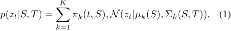
where S is the skeletal graph encoding joint dependencies, T indexes temporal position, πk(t, S) are temporally adaptive mixture weights predicted by a lightweight attention network. This formulation allows the latent distribution to evolve dynamically along the motion sequence while preserving anatomical consistency. It thereby models motion as a time-varying mixture of semantic submanifolds, each corresponding to coherent dynamic primitives. We design an AG-VAE that allows the encoder to learn soft semantic assignments qϕ(k|x), indicating the distribution of motion among latent modes for each time step. The overall objective is derived from the evidence lower bound (ELBO) of the AG-VAE framework, specialized for our time-varying prior. The ELBO of AG-VAE becomes: log p(x) ≥ Eqϕ(z,k|x)[log pθ(x|z, k)] - DKL (qϕ(z, k|x)∥p(z, k)) , By decomposing the joint KL term DKL (qϕ(z, k|x)∥p(z, k)) into its constituent components, the final objective is:

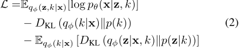
where qϕ(z, k|x) = qϕ(z|x, k)qϕ(k|x) is the variational posterior and p(z, k) = p(z|k)p(k) is the adaptive mixture prior. Crucially, the time-dependency is implicitly captured as qϕ(z, k|x) and p(z, k) are sequence-level representations where z is a sequence of latent vectors z1:N and k is its soft assignment per time step, enabling fine-grained, temporally varying semantics. Unlike prior VAEs where k is fixed for the entire sequence, our design allows multi-granularity semantic switching, improving disentanglement and interpretability.
Empirically, this structured latent design yields lower reconstruction MSE and better latent separability (in Figure 3 and 5), demonstrating that AG-VAE learns an interpretable motion manifold with adaptive semantic boundaries.
3.2. Hierarchical Cross-Modal Alignment
Motivation. Text-to-motion generation requires aligning two inherently hierarchical modalities:
language (word → phrase → sentence),
motion (joint → sub-action → sequence).
Prior works [16, 38], adopt flat cross-attention or CLIPbased conditioning, which fails to capture fine-to-coarse correspondences and long-term semantic consistency.
Dynamic Cross-Modal Memory (DCMM). To enhance temporal reasoning, we design a retrieval-augmented memory bankM=MpPp=1 that stores prototypical text-motion pairs. Our denoiser aims to accept skeleton-aware spatiotemporal latent representations Z ∈ RB×T×J×D and textual conditions c, and predicts the diffusion velocity for the corresponding timestep. Before any attention operation, we embed the input latent and apply positional encoding. This allows the network to differentiate temporal and joint positions: zt = fin(Z) ∈ RB×T×J×D , zp = PosEmb(zt), where N = T · J, and the tensor is reshaped back to B ×T ×J ×D for further processing. Given motion latent features zt and text embeddings cw, a query vector

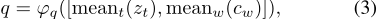
is used to compute similarity with each slot Mp; attention weights αp yield a readout vector r = ∑p αpMp. The fused representation z′t = zt + r thus integrates long-range contextual priors beyond the current sample.
Hierarchical Cross-Modal Attention (HCA). We further introduce two-stage alignment:
Local alignment between word embeddings and per-joint motion tokens to capture fine-grained action semantics; Global alignment between sentence embeddings and the entire motion trajectory to ensure temporal coherence.
The joint attention operation is:

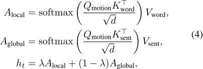
where λ is a learnable gate controlling local-global balance. This hierarchical composition enforces both micro- and macro-level semantic fidelity, contrasting with the singlestage flat attention in previous works.
DCMM injects long-term semantics, improving textmotion consistency. HCA ensures both local detail accuracy and global temporal smoothness. Both modules are seamlessly integrated into the denoising process, maintaining stable training and interpretability.
Adaptive Gated Fusion. Finally, to effectively integrate motion and textual representations without causing feature over-smoothing, we introduce a gated fusion mechanism that adaptively balances the contribution from the memory-enhanced motion features and the textual embeddings. Specifically, for each sample b, we first obtain a motion summary vector mb ∈ RD by averaging the memory-enhanced motion representation ztd ,b,n over the temporal dimension n. For each word-level textual embedding cegb,ℓ ∈ RD , we then compute a gating coefficient gb,ℓ ∈ [0, 1]D using a sigmoid activation: gb,ℓ = σ(Wg[mb, ||, cegb,ℓ ] + bg), where [, ·, ||, ·, ] denotes vector concatenation, Wg ∈ RD×2D and bg ∈ RD are learnable fusion parameters.
The gate gb,ℓ determines the relative influence of motion and textual cues for each semantic token. The final enhanced textual representation cenh b,ℓ ∈ RD is obtained through a convex combination of the two modalities: motion contributes with weight gb,ℓ, and text contributes with weight (1 - gb,ℓ). A Layer Normalization is subsequently applied to stabilize the feature scale:

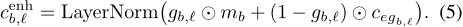
Intuitively, when gb,ℓ is close to 1, the model prioritizes motion-guided information flow, while smaller gb,ℓ values emphasize the original textual semantics. This adaptive gating ensures that the fused representation remains semantically consistent while capturing motion-dependent nuances.
Output and Training. The fused representation is transformed by a SkipTransformer and subsequently projected to yield the denoising-rate estimate (i.e., the diffusion-rate prediction). Architectural specifics are identical to those of the base model and are therefore omitted here; we recommend that readers refer to the orange part in Figure 2 of our baseline description for detailed information.

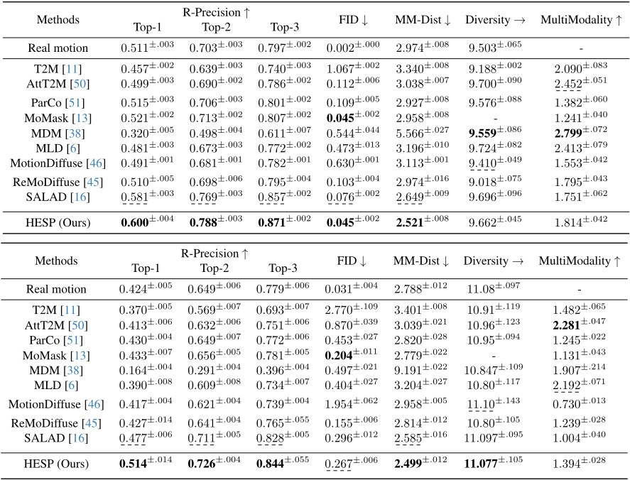
Show table as text
| Method | R-Precision Top-1 ↑ | R-Precision Top-2 ↑ | R-Precision Top-3 ↑ | FID ↓ | MM-Dist ↓ | Diversity → | MultiModality ↑ |
|---|---|---|---|---|---|---|---|
| Real motion | 0.511±.003 | 0.703±.003 | 0.797±.002 | 0.002±.000 | 2.974±.008 | 9.503±.065 | - |
| T2M [11] | 0.457±.002 | 0.639±.003 | 0.740±.003 | 1.067±.002 | 3.340±.008 | 9.188±.002 | 2.090±.083 |
| AttT2M [50] | 0.499±.003 | 0.690±.002 | 0.786±.002 | 0.112±.006 | 3.038±.007 | 9.700±.090 | 2.452±.051 |
| ParCo [51] | 0.515±.003 | 0.706±.003 | 0.801±.002 | 0.109±.005 | 2.927±.008 | 9.576±.088 | 1.382±.060 |
| MoMask [13] | 0.521±.002 | 0.713±.002 | 0.807±.002 | 0.045±.002 | 2.958±.008 | - | 1.241±.040 |
| MDM [38] | 0.320±.005 | 0.498±.004 | 0.611±.007 | 0.544±.044 | 5.566±.027 | 9.559±.086 | 2.799±.072 |
| MLD [6] | 0.481±.003 | 0.673±.003 | 0.772±.002 | 0.473±.013 | 3.196±.010 | 9.724±.082 | 2.413±.079 |
| MotionDiffuse [46] | 0.491±.001 | 0.681±.001 | 0.782±.001 | 0.630±.001 | 3.113±.001 | 9.410±.049 | 1.553±.042 |
| ReMoDiffuse [45] | 0.510±.005 | 0.698±.006 | 0.795±.004 | 0.103±.004 | 2.974±.016 | 9.018±.075 | 1.795±.043 |
| SALAD [16] | 0.581±.003 | 0.769±.003 | 0.857±.002 | 0.076±.002 | 2.649±.009 | 9.696±.096 | 1.751±.062 |
| HESP (Ours) | 0.600±.004 | 0.788±.003 | 0.871±.002 | 0.045±.002 | 2.521±.008 | 9.662±.045 | 1.814±.042 |
| Method | R-Precision Top-1 ↑ | R-Precision Top-2 ↑ | R-Precision Top-3 ↑ | FID ↓ | MM-Dist ↓ | Diversity → | MultiModality ↑ |
|---|---|---|---|---|---|---|---|
| Real motion | 0.424±.005 | 0.649±.006 | 0.779±.006 | 0.031±.004 | 2.788±.012 | 11.08±.097 | - |
| T2M [11] | 0.370±.005 | 0.569±.007 | 0.693±.007 | 2.770±.109 | 3.401±.008 | 10.91±.119 | 1.482±.065 |
| AttT2M [50] | 0.413±.006 | 0.632±.006 | 0.751±.006 | 0.870±.039 | 3.039±.021 | 10.96±.123 | 2.281±.047 |
| ParCo [51] | 0.430±.004 | 0.649±.007 | 0.772±.006 | 0.453±.027 | 2.820±.028 | 10.95±.094 | 1.245±.022 |
| MoMask [13] | 0.433±.007 | 0.656±.005 | 0.781±.005 | 0.204±.011 | 2.779±.022 | - | 1.131±.043 |
| MDM [38] | 0.164±.004 | 0.291±.004 | 0.396±.004 | 0.497±.021 | 9.191±.022 | 10.847±.109 | 1.907±.214 |
| MLD [6] | 0.390±.008 | 0.609±.008 | 0.734±.007 | 0.404±.027 | 3.204±.027 | 10.80±.117 | 2.192±.071 |
| MotionDiffuse [46] | 0.417±.004 | 0.621±.004 | 0.739±.004 | 1.954±.062 | 2.958±.005 | 11.10±.143 | 0.730±.013 |
| ReMoDiffuse [45] | 0.427±.014 | 0.641±.004 | 0.765±.055 | 0.155±.006 | 2.814±.012 | 10.80±.105 | 1.239±.028 |
| SALAD [16] | 0.477±.006 | 0.711±.005 | 0.828±.005 | 0.296±.012 | 2.585±.016 | 11.097±.095 | 1.004±.040 |
| HESP (Ours) | 0.514±.014 | 0.726±.004 | 0.844±.055 | 0.267±.006 | 2.499±.012 | 11.077±.105 | 1.394±.028 |
4. Experiments
We evaluate HESP on two widely used benchmarks: HumanML3D [11] and KIT-ML [28]. The HumanML3D dataset contains 14,616 human motion sequences spanning diverse activities including locomotion, sports, and acrobatics, accompanied by a total of 44,970 textual descriptions. Motions are represented by 22 joints. The KITML dataset comprises 3,911 motion sequences paired with 6,278 text annotations. All motions are preprocessed into joint rotation and position sequences following prior works (SALAD [16], MDM [38]). We use the same splits as in [16], ensuring comparability. Additional quantitative analyses with detailed discussions are provided in the supplementary material, while animated results can be found in the supplementary video.
4.1. Implementation Details
All experiments were implemented on a single NVIDIA GeForce RTX 3090 Ti GPU. We adopted the AdamW optimizer [24], training the VAE for 50 epochs and the denoiser for 500 epochs. The supplementary materials provide a discussion of our training time. The denoiser was trained with 1000 diffusion steps, while DDIM sampling during inference used 50 steps. The classifier-free guidance weight was maintained at w = 7.5 unless otherwise specified. HESP is implemented in PyTorch with Transformer-based motion encoder/decoder, CLIP-ViT-B/32 as text backbone, and K = 10 Gaussian components in AG-VAE.

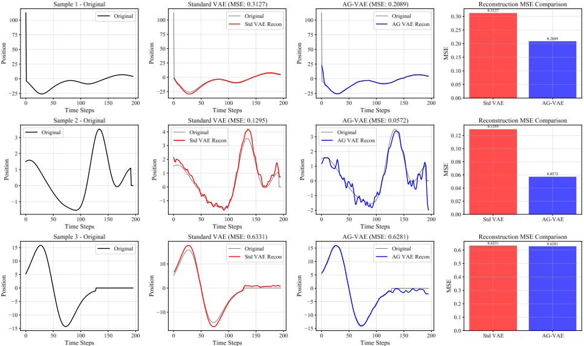

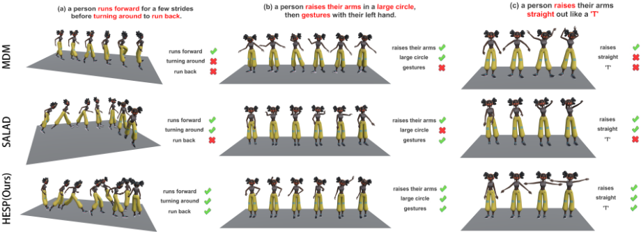
4.2. Quantitative Evaluation
For quantitative analysis, We adopt standard quantitative metrics for text-to-motion evaluation in T2M [11]. The main metric, FID, measures the quality of generated motions by comparing feature distributions between synthesized and real motion sequences. To evaluate semantic alignment between text and motion, we used R-precision and MM-Dist. Additional metrics include Diversity, which reflects the variety of generated motions, and MultiModality, which quantifies the variation among motions produced from the same text prompt. These are regarded as secondary in importance compared to generation quality and text-motion alignment. In line with T2M [11], all experiments were run 20 times on the test splits of HumanML3D and KIT-ML, with the mean and 95% confidence interval reported in Table 1. Notably, HESP consistently attained stronger text-motion alignment on both datasets, independent of the diffusion parametrization used in denoiser training. It also achieved high motion generation quality, yielding the best or second-best FID scores across diffusionbased approaches. These outcomes validate that explicitly representing interactions among skeletal joints, temporal frames, and text tokens enhances both the quality of generated motions and their fidelity to the input text.

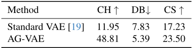
Show table as text
| Method | CH ↑ | DB ↓ | CS ↑ |
|---|---|---|---|
| Standard VAE [19] | 11.95 | 7.83 | 17.23 |
| AG-VAE | 48.81 | 5.39 | 23.50 |
While traditional metrics have improved, the proposed latent separability metrics reveal a significant improvement in semantic structure quality, indicating that AG-VAE effectively disentangles action categories and prevents mode collapse observed in prior VAEs. This quantitative measure supports the interpretability claims made for HESP.
4.3. Qualitative Evaluation
We compared the qualitative results of HSPE with strong baseline models, including MDM and SALAD. The comparison results are shown in Figure 4. Both MDM and SALAD can reflect some of the input text prompts, but cannot process all descriptions in the text. SALAD outperforms MDM, but still struggles with some words. For example, as shown in Figure 4-(a), MDM generates a forward running action, but its turning and back running actions are not ideal, even though the input prompt explicitly specifies "turn and back." As shown in Figure 4-(b), MDM can understand the first two key actions, but still cannot fully understand the entire instruction text, while SALAD similarly lacks the ability to fully understand the entire sentence and verbs. Similarly, in Figure 4-(c), SALAD reflects the raises and straight actions, but cannot understand the "T" shaped instruction. On the other hand, SALAD generates a forward-extending V-shape instead of a "T" shape. In contrast, HSPE is consistently able to integrate all text descriptions into the generated action, regardless of the length and complexity of the text prompts. This demonstrates that HSPE can effectively generate actions highly consistent with the input text.

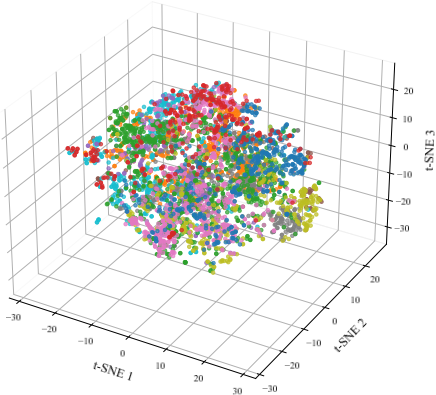
4.4. Ablation Study
To analyze each component's contribution, we conduct ablation experiments on HumanML3D.
Validity of AG-VAE. To validate the effectiveness of AGVAE, we compare its performance against the VAE architecture employed in SALAD . Specifically, SALAD utilizes a skeleton-aware VAE to decouple two dimensions and facilitate information exchange between adjacent components. Given that VAE compresses motion features into latent variables, we evaluate reconstruction quality using FID. We visually compared the reconstruction capabilities of the VAE while simultaneously calculating MSE. As shown in Table 3, our AG-VAE significantly outperforms baseline methods on both FID and MSE metrics. Notably, our method requires far fewer training parameters than other approaches. This indicates that AG-VAE, which models the latent motion manifold as multiple submanifolds organized semantically to construct structured human motion semantics, effectively builds meaningful latent motion spaces-crucial for training the generator.
To quantitatively evaluate the structural organization of the latent space, we measure the Calinski-Harabasz (CH) index, Davies-Bouldin (DB) index, and the minimum centroid separation (CS) between clusters, using the same cluster assignments obtained from the AG-VAE classifier for both models. As shown in Table 5, the proposed AGVAE exhibits a markedly more compact and separable latent structure. Specifically, it achieves a 4.1× higher CH score (48.8 vs 11.9) and a 31% lower DB index (5.39 vs 7.83) compared to the standard VAE. Moreover, the cluster-centroid separation increases from 17.2 → 23.5, reflecting a clearer partitioning of motion representations in the latent manifold. These results demonstrate that the adversarial-guided Gaussian mixture prior in AG-VAE promotes sharper cluster boundaries and better inter-class discrimination, even when evaluated under identical label assignments.

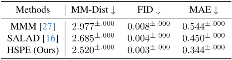
Show table as text
| Methods | MM-Dist ↓ | FID ↓ | MAE ↓ |
|---|---|---|---|
| MMM [27] | 2.977±.000 | 0.008±.000 | 0.544±.000 |
| SALAD [16] | 2.685±.000 | 0.004±.000 | 0.450±.000 |
| HSPE (Ours) | 2.520±.000 | 0.003±.000 | 0.344±.000 |

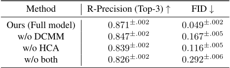
Show table as text
| Method | R-Precision (Top-3) ↑ | FID ↓ |
|---|---|---|
| Ours (Full model) | 0.871±.002 | 0.049±.002 |
| w/o DCMM | 0.847±.002 | 0.167±.005 |
| w/o HCA | 0.839±.002 | 0.116±.005 |
| w/o both | 0.826±.002 | 0.292±.006 |
Validity of key modules of HESP. Furthermore, we conducted an ablation study to validate the effectiveness of DCMM and HCA (two core components of HESP) on textto-motion generation performance. In this experiment, we evaluated three variants: (i) comparing with and without DCMM; (ii) replacing HCA with a self-attention mechanism by concatenating sentence-level CLIP features from the base model to motion features; (iii) combining (i) and (ii). As shown in Table 4, HCA and DCMM facilitate textmotion information interaction and improve semantic consistency within the decoupled latent space.
Validity of cluster structure. In our clustering analysis experiments in Figure 5, we used the AG-VAE model's classifier to cluster and assign samples in the latent space, illustrates latent clusters projected via t-SNE and colored by motion labels. HESP exhibits well-separated, semantically meaningful submanifolds, each corresponding to consistent action primitives. Experimental results show that the samples in the latent space formed a clear cluster structure, indicating that the model can effectively learn the inherent grouping characteristics of the data. The interpretability stems from AG-VAE's temporally adaptive Gaussian components, which allow the latent trajectory to evolve across submanifolds as the motion transitions between actions.
User Study. To evaluate perceptual realism and semantic accuracy, we conduct a user study with 20 participants on 50 text prompts. Participants rate each generated motion (1-5) on: Visual realism, and Semantic match with the input text. HESP achieves average scores of 4.4 and 4.2, outperforming SALAD (4.0 / 3.6) and MoMask (3.8 / 3.4). The improvement aligns with our quantitative metrics, indicating that users perceive both smoother motion and stronger text fidelity.
Expend. Since the base model is limited to generating text and single-person actions with limited motion length, we implemented text-controlled long-sequence single-person motion generation based on our own model. Detailed materials can be found in our Appendix C.3.
5. Discussion
While the structured latent space of HESP improves interpretability and text fidelity, it slightly constrains stochastic diversity, a common trade-off observed in hierarchical models. Future work will explore entropy-regularized mixture priors to balance diversity and controllability. Abrupt transitions between semantically distinct motions remain challenging, particularly when the textual description lacks explicit transition cues. This may be due to the trade-off between high quality, text fidelity, and diversity. Although we consider diversity a secondary objective, finding a method that balances both may be a worthwhile direction to explore. Furthermore, while HESP has explored long-sequence motion, generating high-quality long-sequence single-person actions remains a worthwhile area of research, and the interaction of multi-person actions may be an interesting direction for future research.
6. Conclusion
In this paper, we introduced HESP (Hierarchical Enhancement of Semantic Priors), a unified diffusion framework for text-driven 3D human motion generation. HESP explicitly structures the motion latent space through the proposed Adaptive Gaussian VAE (AG-VAE), and bridges text-motion semantics via Dynamic Cross-Modal Memory (DCMM) and Hierarchical Cross-Modal Attention (HCA). This design enables hierarchical alignment between linguistic and kinematic representations, yielding disentangled, interpretable, and semantically faithful motion synthesis. Comprehensive experiments on HumanML3D and KIT-ML demonstrate that HESP outperforms recent state-of-the-art methods (SALAD, MoMask, MDM) in quantitative metrics. Our hierarchical latent modeling not only enhances motion controllability and semantic alignment but also provides visual interpretability within the latent manifold. We believe HESP establishes a generalizable framework for structured multimodal generation, bridging diffusion models with semantic reasoning.
Acknowledgements
We appreciate the valuable discussion from the anonymous reviewers. This work was supported by the Solfeggio EarTraining Intelligent Robot and Cloud Platform RD Project for Music Education (No. 2024CXY0102), the 3D Visualization Digital Twin Integrated Control System Project (No. 2023CXY0111), the Pre-research Project for Introduced Talents of Minjiang University (No. MJY25025), the Public Technology Service Platform Project of Xiamen City (No. 3502Z20231043), and the Fujian Provincial Science and Technology Major Project (No. 2024HZ022003).
References
[1] Hyemin Ahn, Timothy Ha, Yunho Choi, Hwiyeon Yoo, and Songhwai Oh. Text2action: Generative adversarial synthesis from language to action. In 2018 IEEE International Conference on Robotics and Automation (ICRA), pages 5915-5920. IEEE, 2018. 1, 2
[2] Chaitanya Ahuja and Louis-Philippe Morency. Language2pose: Natural language grounded pose forecasting. In 2019 International Conference on 3D Vision (3DV), pages 719-728. IEEE, 2019. 1
[3] Nikos Athanasiou, Mathis Petrovich, Michael J Black, and G¨ul Varol. Teach: Temporal action composition for 3d humans. In 2022 International Conference on 3D Vision (3DV), pages 414-423. IEEE, 2022. 2
[4] Daphne Bavelier and Helen J Neville. Cross-modal plasticity: where and how? Nature Reviews Neuroscience, 3(6): 443-452, 2002. 2
[5] Uttaran Bhattacharya, Nicholas Rewkowski, Abhishek Banerjee, Pooja Guhan, Aniket Bera, and Dinesh Manocha. Text2gestures: A transformer-based network for generating emotive body gestures for virtual agents. In 2021 IEEE virtual reality and 3D user interfaces (VR), pages 1-10. IEEE, 2021. 1, 2
[6] Xin Chen, Biao Jiang, Wen Liu, Zilong Huang, Bin Fu, Tao Chen, and Gang Yu. Executing your commands via motion diffusion in latent space. In Proceedings of the IEEE/CVF Conference on Computer Vision and Pattern Recognition, pages 18000-18010, 2023. 1, 2, 5
[7] Jacob Devlin. Bert: Pre-training of deep bidirectional transformers for language understanding. arXiv preprint arXiv:1810.04805, 2018. 1
[8] Nat Dilokthanakul, Pedro AM Mediano, Marta Garnelo, Matthew CH Lee, Hugh Salimbeni, Kai Arulkumaran, and Murray Shanahan. Deep unsupervised clustering with gaussian mixture variational autoencoders. arXiv preprint arXiv:1611.02648, 2016. 3
[9] Katerina Fragkiadaki, Sergey Levine, Panna Felsen, and Jitendra Malik. Recurrent network models for human dynamics. In Proceedings of the IEEE International Conference on Computer Vision, pages 4346-4354, 2015. 2
[10] Anindita Ghosh, Noshaba Cheema, Cennet Oguz, Christian Theobalt, and Philipp Slusallek. Synthesis of compositional animations from textual descriptions. In Proceedings of the IEEE/CVF international conference on computer vision, pages 1396-1406, 2021. 2
[11] Chuan Guo, Shihao Zou, Xinxin Zuo, Sen Wang, Wei Ji, Xingyu Li, and Li Cheng. Generating diverse and natural 3d human motions from text. In Proceedings of the IEEE/CVF Conference on Computer Vision and Pattern Recognition, pages 5152-5161, 2022. 1, 2, 5, 6, 7
[12] Chuan Guo, Xinxin Zuo, Sen Wang, and Li Cheng. Tm2t: Stochastic and tokenized modeling for the reciprocal generation of 3d human motions and texts. In European Conference on Computer Vision, pages 580-597. Springer, 2022. 1
[13] Chuan Guo, Yuxuan Mu, Muhammad Gohar Javed, Sen Wang, and Li Cheng. Momask: Generative masked modeling of 3d human motions. In Proceedings of the IEEE/CVF Conference on Computer Vision and Pattern Recognition, pages 1900-1910, 2024. 1, 2, 5
[14] Daniel Holden, Taku Komura, and Jun Saito. Phasefunctioned neural networks for character control. ACM Transactions on Graphics (TOG), 36(4):1-13, 2017. 2
[15] Fangzhou Hong, Mingyuan Zhang, Liang Pan, Zhongang Cai, Lei Yang, and Ziwei Liu. Avatarclip: Zero-shot textdriven generation and animation of 3d avatars. arXiv preprint arXiv:2205.08535, 2022. 1
[16] Seokhyeon Hong, Chaelin Kim, Serin Yoon, Junghyun Nam, Sihun Cha, and Junyong Noh. Salad: Skeleton-aware latent diffusion for text-driven motion generation and editing. In Proceedings of the Computer Vision and Pattern Recognition Conference, pages 7158-7168, 2025. 1, 2, 3, 4, 5, 6, 8
[17] Biao Jiang, Xin Chen, Wen Liu, Jingyi Yu, Gang Yu, and Tao Chen. Motiongpt: Human motion as a foreign language. Advances in Neural Information Processing Systems, 36:20067-20079, 2023. 1
[18] Jihoon Kim, Jiseob Kim, and Sungjoon Choi. Flame: Free-form language-based motion synthesis & editing. In Proceedings of the AAAI Conference on Artificial Intelligence, pages 8255-8263, 2023. 2
[19] Diederik P Kingma and Max Welling. Auto-encoding variational bayes. arXiv preprint arXiv:1312.6114, 2013. 2, 7
[20] Kyungho Lee, Seyoung Lee, and Jehee Lee. Interactive character animation by learning multi-objective control. ACM Transactions on Graphics (TOG), 37(6):1-10, 2018. 2
[21] Zimo Li, Yi Zhou, Shuangjiu Xiao, Chong He, Zeng Huang, and Hao Li. Auto-conditioned recurrent networks for extended complex human motion synthesis. arXiv preprint arXiv:1707.05363, 2017. 2
[22] Angela S. Lin, Lemeng Wu, Rodolfo Corona, Kevin W. H. Tai, Qixing Huang, and Raymond J. Mooney. Generating animated videos of human activities from natural language descriptions. 2018. 2
[23] Yongqi Liu, Jiashuang Zhou, and Xiaoqin Du. Human motion generation via conditioned gmvae with tunet. In ICASSP 2024-2024 IEEE International Conference on Acoustics, Speech and Signal Processing (ICASSP), pages 6140-6144. IEEE, 2024. 2
[24] Ilya Loshchilov and Frank Hutter. Decoupled weight decay regularization. In International Conference on Learning Representations, 2019. 5
[25] Yunhong Lou, Linchao Zhu, Yaxiong Wang, Xiaohan Wang, and Yi Yang. Diversemotion: Towards diverse human motion generation via discrete diffusion. arXiv preprint arXiv:2309.01372, 2023. 2
[26] Mathis Petrovich, Michael J Black, and G¨ul Varol. Temos: Generating diverse human motions from textual descriptions. In European Conference on Computer Vision, pages 480497. Springer, 2022. 2
[27] Ekkasit Pinyoanuntapong, Pu Wang, Minwoo Lee, and Chen Chen. Mmm: Generative masked motion model. In Proceedings of the IEEE/CVF Conference on Computer Vision and Pattern Recognition, pages 1546-1555, 2024. 8
[28] Matthias Plappert, Christian Mandery, and Tamim Asfour. The kit motion-language dataset. Big data, 4(4):236-252, 2016. 2, 5
[29] Alec Radford, Karthik Narasimhan, Tim Salimans, Ilya Sutskever, et al. Improving language understanding by generative pre-training. 1
[30] Alec Radford, Jong Wook Kim, Chris Hallacy, Aditya Ramesh, Gabriel Goh, Sandhini Agarwal, Girish Sastry, Amanda Askell, Pamela Mishkin, Jack Clark, et al. Learning transferable visual models from natural language supervision. In International conference on machine learning, pages 8748-8763. PMLR, 2021. 1, 2
[31] Carl Rasmussen. The infinite gaussian mixture model. Advances in neural information processing systems, 12, 1999. 2
[32] Jiaming Song, Chenlin Meng, and Stefano Ermon. Denoising diffusion implicit models. arXiv preprint arXiv:2010.02502, 2020. 1
[33] Sebastian Starke, He Zhang, Taku Komura, and Jun Saito. Neural state machine for character-scene interactions. ACM Trans. Graph., 38(6):209-1, 2019. 2
[34] Sebastian Starke, Yiwei Zhao, Taku Komura, and Kazi Zaman. Local motion phases for learning multi-contact character movements. ACM Transactions on Graphics (TOG), 39 (4):54-1, 2020.
[35] Sebastian Starke, Yiwei Zhao, Fabio Zinno, and Taku Komura. Neural animation layering for synthesizing martial arts movements. ACM Transactions on Graphics (TOG), 40 (4):1-16, 2021. 2
[36] Guy Tevet, Brian Gordon, Amir Hertz, Amit H Bermano, and Daniel Cohen-Or. Motionclip: Exposing human motion generation to clip space. In European Conference on Computer Vision, pages 358-374. Springer, 2022. 1, 2
[37] Guy Tevet, Sigal Raab, Brian Gordon, Yoni Shafir, Daniel Cohen-or, and Amit Haim Bermano. Human motion diffusion model. In The Eleventh International Conference on Learning Representations, 2023. 1, 2
[38] Guy Tevet, Sigal Raab, Brian Gordon, Yoni Shafir, Daniel Cohen-or, and Amit Haim Bermano. Human motion diffusion model. In The Eleventh International Conference on Learning Representations, 2023. 1, 2, 4, 5, 6
[39] Aaron Van Den Oord, Oriol Vinyals, et al. Neural discrete representation learning. Advances in neural information processing systems, 30, 2017. 2
[40] Yin Wang, Zhiying Leng, Frederick WB Li, Shun-Cheng Wu, and Xiaohui Liang. Fg-t2m: Fine-grained textdriven human motion generation via diffusion model. In Proceedings of the IEEE/CVF International Conference on Computer Vision, pages 22035-22044, 2023. 2
[41] Shihong Xia, Lin Gao, Yu-Kun Lai, Ming-Ze Yuan, and Jinxiang Chai. A survey on human performance capture and animation. Journal of Computer Science and Technology, 32:536-554, 2017. 2
[42] Sijie Yan, Yuanjun Xiong, and Dahua Lin. Spatial temporal graph convolutional networks for skeleton-based action recognition. In Proceedings of the AAAI conference on artificial intelligence, 2018. 1
[43] Jianrong Zhang, Yangsong Zhang, Xiaodong Cun, Shaoli Huang, Yong Zhang, Hongwei Zhao, Hongtao Lu, and Xi Shen. T2m-gpt: Generating human motion from textual descriptions with discrete representations. In Proceedings of the IEEE/CVF Conference on Computer Vision and Pattern Recognition (CVPR), 2023. 1, 2
[44] Mingyuan Zhang, Zhongang Cai, Liang Pan, Fangzhou Hong, Xinying Guo, Lei Yang, and Ziwei Liu. Motiondiffuse: Text-driven human motion generation with diffusion model. arXiv preprint arXiv:2208.15001, 2022. 1
[45] Mingyuan Zhang, Xinying Guo, Liang Pan, Zhongang Cai, Fangzhou Hong, Huirong Li, Lei Yang, and Ziwei Liu. Remodiffuse: Retrieval-augmented motion diffusion model. In Proceedings of the IEEE/CVF International Conference on Computer Vision, pages 364-373, 2023. 2, 5
[46] Mingyuan Zhang, Zhongang Cai, Liang Pan, Fangzhou Hong, Xinying Guo, Lei Yang, and Ziwei Liu. Motiondiffuse: Text-driven human motion generation with diffusion model. IEEE Transactions on Pattern Analysis and Machine Intelligence, 2024. 2, 5
[47] Yan Zhang, Michael J Black, and Siyu Tang. Perpetual motion: Generating unbounded human motion. arXiv preprint arXiv:2007.13886, 2020. 2
[48] Yaqi Zhang, Di Huang, Bin Liu, Shixiang Tang, Yan Lu, Lu Chen, Lei Bai, Qi Chu, Nenghai Yu, and Wanli Ouyang. Motiongpt: Finetuned llms are general-purpose motion generators. In Proceedings of the AAAI Conference on Artificial Intelligence, pages 7368-7376, 2024. 1
[49] Chongyang Zhong, Lei Hu, Zihao Zhang, Yongjing Ye, and Shihong Xia. Spatio-temporal gating-adjacency gcn for human motion prediction. In Proceedings of the IEEE/CVF Conference on Computer Vision and Pattern Recognition, pages 6447-6456, 2022. 1
[50] Chongyang Zhong, Lei Hu, Zihao Zhang, and Shihong Xia. Attt2m: Text-driven human motion generation with multiperspective attention mechanism. In Proceedings of the IEEE/CVF International Conference on Computer Vision, pages 509-519, 2023. 1, 5
[51] Qiran Zou, Shangyuan Yuan, Shian Du, Yu Wang, Chang Liu, Yi Xu, Jie Chen, and Xiangyang Ji. Parco: Partcoordinating text-to-motion synthesis. arXiv preprint arXiv:2403.18512, 2024. 1, 5